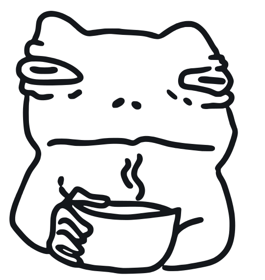
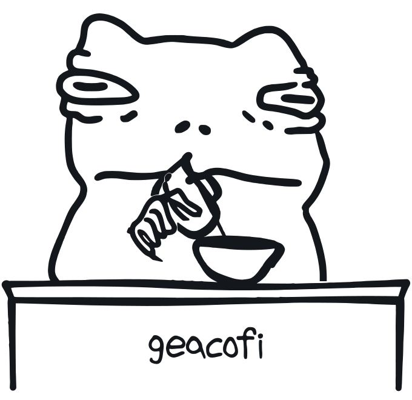
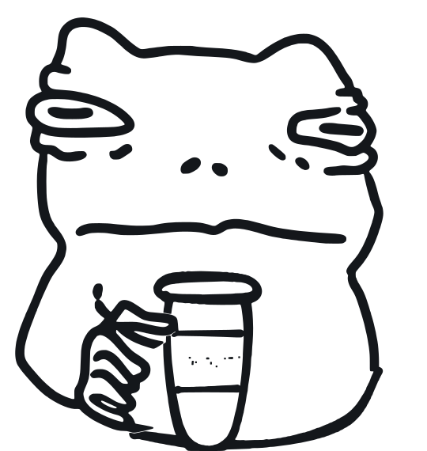
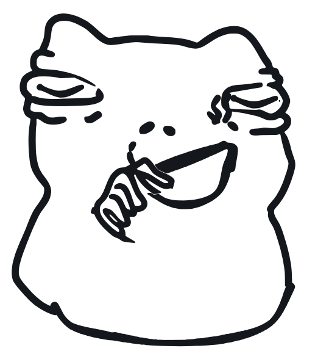
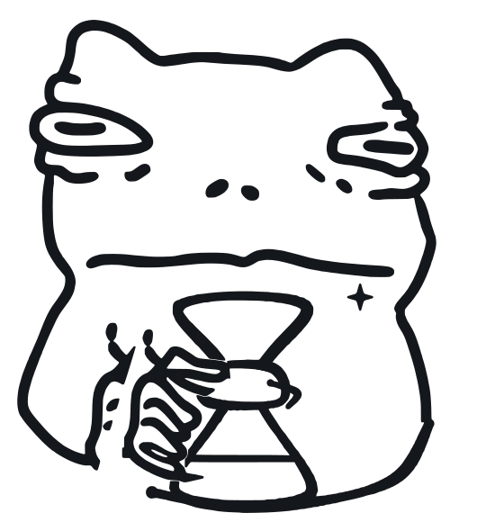
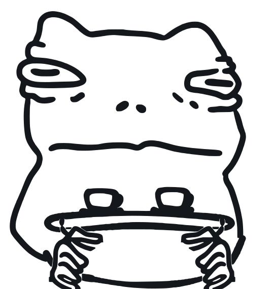

Biblia de la rana · 03
universo café
Lo principal: siempre cerca del café. Incluye las escenas detrás de la barra, con el logo en el frente del mostrador.








Lo principal: siempre cerca del café. Incluye las escenas detrás de la barra, con el logo en el frente del mostrador.





